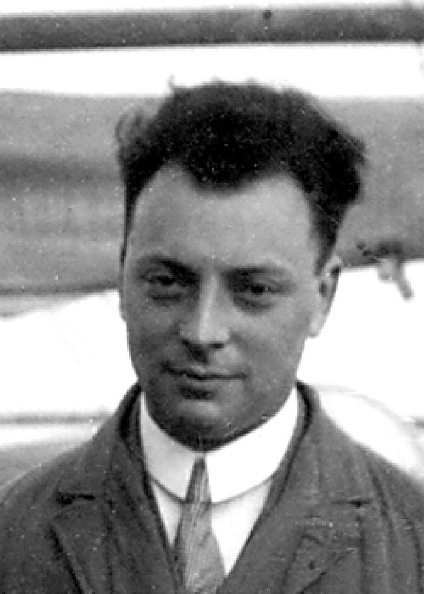

Some interesting stuff I found

Wolfgang Pauli and Humility
Dr. Pauli is never known for humility. It is said that when Einstien visited his college, he remarked at the end of his lecture, 'You know, what Mr. Einstein said is not so stupid!'. He was the same man who proclaimed no 2 fermions should be same in all their respects. But this arrogant genius was humble in atleast the moment of his life when he proposed 'neutron'(later christened 'neutrino' by Fermi) as a was yet undiscovered particle.
Pauli believed that discovering and proposing new particles was a work of experimentalists not theoretical physicists, the viewpoint which has been turned completely around recently. However, still humble and afraid of his daring, he wrote the letter to Gauverein meeting in Tübingen with a restraint.
Dear Radioactive Gentleman and Ladies...
Read Article
Gaming & eSports
When I'm not coding, I'm usually immersed in competitive gaming. I've compiled a playlist of my best plays, strategies, and reviews of the latest indie games. Check out my channel to see what I'm playing right now.
Watch Video
Street Photography
Capturing the vibrant energy of the city is a weekend hobby of mine. This gallery showcases some of my favorite shots from my travels, focusing on architecture, candid moments, and urban landscapes.
View Gallery